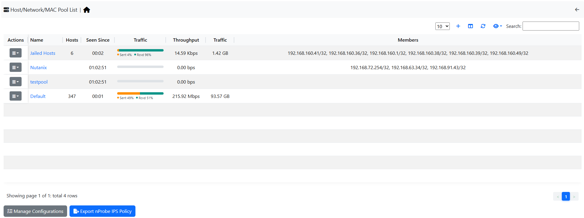

Хост-пулы
Пулы хостов — это логические группы хостов, которые подробно описаны в разделе «Сетевые интерфейсы» этот документ. На этой странице показан список определенных и активных в данный момент пулов хостов.

Страница списка хостов в пулах хостов
В каждой строке таблицы для каждого пула показаны:
Имя пула, определенное при создании пула.
Хосты, количество активных хостов в пуле
Видно с момента — время, прошедшее с момента получения первого пакета хостом пула.
Traffic Breakdown, полоса с долей отправленного и полученного трафика
Пропускная способность, текущая пропускная способность пула
Трафик, общий трафик, которым обменивается пул.
Участники, адреса, сети и MAC-адреса, принадлежащие пулу.
Кнопка Действия Столбец открывает список активных хостов пула. В его меню также есть:
Таймсерии, исторические диаграммы трафика пула. Он отключен до тех пор, пока не будет достигнута временная серия пула хостов. включены в Настройки > Предпочтения > Таймсерии.
Управление участниками, страница для добавления и удаления участников (только для администраторов; недоступно для По умолчанию пул, в котором хранятся все хосты, не назначенные другому пулу)
Изменить имя, чтобы переименовать пул и изменить его участников
Изменить политику трафика, политика трафика пула (только администраторы, требуется ntopng Pro)
Удалить, чтобы удалить пул. Встроенный По умолчанию и Заключенные хосты пулы не могут быть удалены.
Бассейны добавляются с помощью Добавить пул кнопка над таблицей. Для добавления, редактирования и удаления пулов требуется Объединение возможностей пользователя (они всегда есть у администраторов). Недоступные действия выделены серым цветом. с причиной.
Участники пула
Управление участниками открывает участников пула; заголовок страницы показывает путь Пулы хостов/имя пула, щелкнуть Хост-пулы чтобы вернуться к списку. В каждой строке отображается участник (IP-адрес, сеть или MAC-адрес), его тип и его VLAN.
Добавить участника пула хостов спрашивает тип участника (адрес IPv4/IPv6, сеть или MAC-адрес), адрес, а для адресов и сетей — VLAN (пусто или 0: нет VLAN).
Кнопка каждой строки редактирует элемент; стрелка рядом с ним открывает меню с Удалить. А удаленный участник возвращается в По умолчанию бассейн.
Участник может принадлежать только к одному пулу: добавление (или изменение) участника, который уже находится в другом пуле. пулу отказано, и в сообщении будет указано, в каком пуле он есть. Сначала удалите его из этого пула.
Импортировать участников пула хостов открывается Настройки > Управление конфигурацией, чтобы загрузить элементы из файла.
Только администраторы могут открыть эту страницу.

Страница пула хостов
Конфигурация пулов хостов, которая включает в себя определение пулов хостов, а также члены пула можно легко экспортировать в JSON и импортировать в другой экземпляр ntopng из Настройки > Управление конфигурацией страница. Импортированные пулы хостов заменят существующие.
Каждому члену пула может быть присвоен «Псевдоним», чтобы облегчить его идентификацию. Как правило, можно присвойте мнемоническую метку в качестве псевдонима участника (например, «iPhone Джона» или «Smart TV»).
Просмотр статистики пула хостов доступен из фактического интерфейса. Хозяева > Хост-пулы меню. В представлении отображается информация о действующем пуле (например, общая пропускная способность пула). и обеспечивает доступ к историческим временным рядам трафика пула (Профессиональная версия), а также к в настоящее время активные участники пула.
Политика дорожного движения
Пулы хостов также можно использовать для обеспечения соблюдения политик трафика (например, блокировать трафик YouTube для пула «Джон» и ограничить трафик Facebook на уровне 1 Mbps для пула «Гости»). Эта функция доступна в nEdge (когда ntopng используется встроенно, как описано в разделе «Дополнительные функции» данного документа), или когда ntopng используется в сочетание с нФВ (видеть Использование ntopng с nEdgeLite).
Изменить политику трафика действие пула открывает его политику трафика (только администраторы, необходимо ntopng Про; не на nEdge, у которого есть свои собственные пользовательские политики):
Политика по умолчанию: что происходит с трафиком пула, который не соответствует ни одному правилу, Проходить или Уронить.
Правила: исключения из политики по умолчанию по протоколу приложения, категории приложения, имя хоста (или IP-адрес), страна, континент и риск потока. Добавить правило выбирает значение и действие (Проходить, Медленный проход, Медленный проход или Уронить); щелкните правило, чтобы изменить его действие, ✕ удаляет его. Потоки с одним из выбранных рисков всегда отбрасываются.
Сохранять применяет изменения (отключено, пока что-то не изменится).
Автоматическая настройка заменяет правила на предложенные трафиком хостов пул (протоколы и сайты, которые они используют, разрешены) и устанавливает политику по умолчанию на Уронить, после подтверждения. Это требует Самые посещаемые сайты опция включена в настройках > Заявки, в идеале за день.